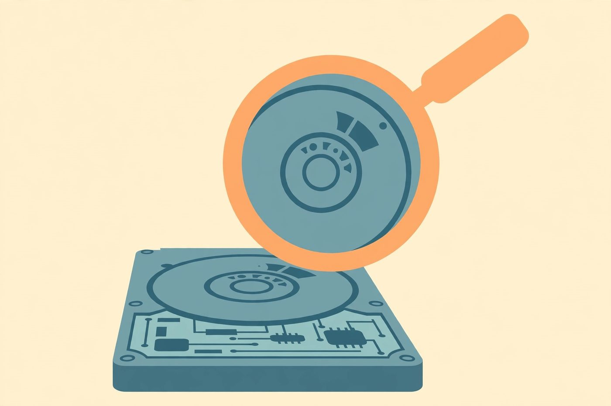

Free tools to check drive health

You don't need to buy anything to check whether your drive is healthy. The free options fall into three categories: tools already built into your operating system, diagnostic tools from the drive manufacturers, and open-source monitoring tools. Here's what each category does, what it's good at, and when to reach for it.
Category 1: Built-in OS utilities
Every major operating system ships with something that can check a drive's basic health — no download required.
- Windows includes a file-system check accessible from a drive's properties, plus drive-health information in the Settings/Storage area on newer versions. These are quick first checks: they verify the file system is consistent and surface basic health warnings.
- macOS includes Disk Utility, whose First Aid function checks and repairs file-system issues. It operates on the file system rather than the drive hardware, but file-system corruption is often the first visible symptom of a hardware problem.
- Linux users have the smartmontools package, which provides a command-line tool for reading a drive's full SMART data directly. It's the most detailed of the built-in options and the backbone many other tools are built on.
Strengths: already installed, trustworthy, good for a quick sanity check. Limits: generally one-shot checks rather than continuous monitoring, and the reports can be terse. If the built-in tool says something's wrong, believe it — but a clean result from a quick check isn't a full bill of health.
Category 2: Manufacturer diagnostic tools
The companies that make drives publish their own free diagnostic utilities. These are worth knowing about because they understand their own firmware better than any generic tool can — including brand-specific attributes and self-tests the drive supports.
Typically these tools can:
- Run short and extended self-tests (the drive tests itself and reports back).
- Show detailed SMART data with the manufacturer's own interpretation.
- Update drive firmware, which occasionally fixes bugs that look like hardware failure.
- In some cases, perform a secure erase when you're retiring a drive.
When to use them: when a generic tool flags a problem and you want a second opinion from the source, or before contacting support about a warranty claim — manufacturers often ask for their own tool's test result. One caution: use the tool made for your drive's brand. A diagnostic written for one manufacturer's firmware can misread another's.
Category 3: Open-source and third-party monitors
This is the "set it and forget it" category: free tools that sit in the background, continuously watch your drives' SMART data and temperatures, and alert you when something changes. Typical features include:
- A simple health dashboard — green/yellow/red per drive.
- Email or desktop notifications when an attribute degrades.
- Temperature history, so you can spot a drive that's slowly cooking itself.
- History graphs that make trends visible — remember, trends matter more than snapshots (see our SMART guide).
When to use them: on any computer you care about — a home server, a work PC, a machine holding family photos. Continuous monitoring catches the slow decline you'd never notice with a once-a-year manual check. Pick a well-established open-source option with an active community rather than a random download.
How to run a check: a sane routine
- Start with the built-in tool for a quick read of the situation.
- If anything looks off, confirm with the manufacturer's tool and run its extended self-test.
- For ongoing peace of mind, install a monitor and let it watch in the background.
- Recheck on a schedule — monthly is plenty for most home users.
What these tools can't do
- They can't predict sudden electronic failure. A drive whose controller board dies gives no SMART warning. No software fixes this.
- They can't repair hardware. A clean scan doesn't fix bad sectors; at best the drive remaps them itself. Software "repairs" a failing drive the way a fresh coat of paint repairs rust.
- Intensive scans stress the drive. An extended self-test or full surface scan works the drive hard. That's fine on a healthy drive, but on a drive you already suspect is dying, back up first, scan second — a scan can be the final straw for marginal hardware.
The bottom line
Start free and stay free: your OS already has a basic check, the manufacturer has a deeper one, and open-source monitors will watch things for you continuously. Use all three layers, interpret results conservatively (any real warning means back up and plan a replacement), and remember that the goal of all this monitoring is simple — to give you warning before the failure, while your backups are what save you when warning isn't enough.